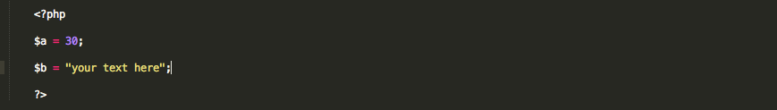

Getting started with PHP is simple for those of us who already know HTML and CSS.
You start just like you would with a regular HTML file, but instead of saving it as .html,
it gets saved as .php. This tells the server that there is PHP to run on the page.
The PHP code gets added right in with the HTML.
It is important to keep in mind that PHP runs on the server, not in your browser. This means that none of your PHP will work unless you upload it to the server. Testing is a little more difficult because you have to upload each change to the server and test it by going to the actual url.
So, now is your turn to choose one of your old assignments, open it up and save it as a php file.
That was easy, right? Things will get a little bit more challenging, but not too much.
The most basic function in PHP is the echo function. Echo just means, display whatever comes after this to the user. Now it is time to write our very first line of PHP.
PHP goes right into our HTML and so to begin writing PHP you just start with an open "<" and then ?php,
add your php code (each line ends with a semicolon) and then to end the php you put ? and then close ">". In between those php tags is where our code will go.
To get us started we are going to choose any word or phrase and display it on our site using the echo function in php. After the php opening tag write the word echo followed by your word or phrase in parentheses. It should look something like this:
You may be asking yourself, why would I go through all of that just to display a little text that
could just as easily display with HTML, well hold on, we are getting there.
The next step to understanding the power of PHP is variables. Variables in PHP work a like they do in many
object oriented programming languages. I understand that might not mean very much to many of you so let me explain.
A variable is just a word or letter that you can set equal to some other value. In PHP variables are created by
adding ‘$’ to the front of a word. Once you have created or defined a variable you can set it equal to a word or value. You can then do all kinds of things with those variables, and we will talk about that later. For now we are just going to define a variable $a and set it equal to some number, and then another variable $b and set that equal to a phrase. It should look like this:

If you want to make sure those variables really contain the values that you just set, you can write "echo $a" or "echo $b" after setting them and it will display back the value of your variable.
Again this just seems like a more complicated way to display static information, but soon we
will have the parts necessary to make exciting, user specific content.
Setting data equal to other data that we define in the PHP is not that exciting, this is where forms come in.
You can take user input data from a form can set equal to a variable and then used throughout the php.
At this point we need a form to collect some data to use. You have to add a form to your html, or just copy one from an old assignment since they are pretty tedious to create but make sure it has an input number field called age. If you do not remember, each feild in a form has name and that is what we will be using to access that field in our PHP. In this example we are going to set a variable equal to the age that someone on our website gives us while entering their information. That age field looks like this in the form. Notice the name of the field is "age."
As you can see in my example, my form has a submit button. This is going to be very important, so if your form does not have a submit button yet, add one. You should know how to do this, but if you do not remember, you can copy what you see above, the submit button is the line right after the age field.
Now we need to tell the form what to do when the submit button is clicked. This is very important, or nothing will happen. We want to tell it to open up our confirmation page. Our confirmation page is just going to be another .php file. Create a new php file (just like you would create an html file) and save it as my-form.php. Once you have created the new file and saved it, you need to link it to your form. You do this by writing, "action="my-form.php" in the form definition line. This may seem a bit confusing so here is the same form I showed you before but with the form line highlighted.
To access the age field in our php in my-form.php we need to write either "$_Post" or "$_Get", based on what is used in the form, then square brackets and inside those brackets we put the name of the field in parentheses. This is how that is done to set the feild eqal to the variable b and then display it back to the user:
Just collecting data and giving it right back to a user can be good for confirmation screens but being able to use and
manipulate it is where things really start to get interesting. Variables can be manipulated using simple mathematical operators
including: addition, subtraction, multiplication and division. This means that when I get a number from a person I can change it
and then send it back to them. In last weeks simple demo this is how I calculated the number of years a person has to wait in order
to sign up for a story slam. I took their age and subtracted it from 30 and displayed that information back to them, you can do the same, like this:
PHP also has greater than (>), less than (<) equal to (==) and not equal to (!=). These can be used to compare varibles and can be used in conditional statements.
If statements can be used in conjunction with operators to display information or perform operations only in certain situations.
For example, we can display one statement if the age we were given earlier is less than 30 and one statement if the age is greater than 30. Coninuing on with the last example, where we set the age equal to our variable $b we could do something like this:
The value of the variable is saved throughout the file even if php is opened and closed. As you can see the php is opened and right away I start using $b. That is because we already defined it in an earlier section.
These are some very simple examples of PHP but there is so much more that it can do. Keep exploring how it can make your sites dynamic!